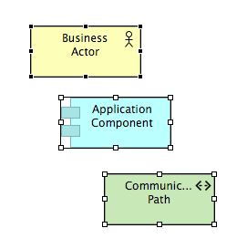

提示：使用选择工具平移视图。
提示：使用选择工具平移视图。如果您从调色板中选择第一个选择工具，请单击视图上的某个位置以使其获得焦点，然后按住空格键，光标将变为手形，您可以平移视图。您还可以使用鼠标中键平移视图。
调色板中有两个可用的选择工具。这些用于以各种方式选择图表中的对象。
调色板中的选择工具
第一个工具（选择工具）主要用于选择元素（框）。使用此工具在元素和连接周围拖动选取框区域时，仅将选择元素（框）。
第二个工具（选框工具）由下拉按钮激活，用于以各种方式选择元素和连接两者：
选择工具选项
您可以使用选择工具将元素或连接添加到选择中，方法是按住 Ctrl 键并单击元素或连接。可以使用相同的操作从选择中删除元素或连接。
当选择多个元素或连接时，其中一个元素或连接将被标记为黑色手柄。这被称为主要选择。
三个元素被选中，最上面是主要选择
主要选择与对齐工具一起使用。您可以使用选择工具更改哪个元素或连接是主要选择，方法是按住 Shift 键并单击要进行主要选择的元素或连接。
提示：使用选择工具平移视图。
如果您从调色板中选择第一个选择工具，请单击视图上的某个位置以使其获得焦点，然后按住空格键，光标将变为手形，您可以平移视图。您还可以使用鼠标中键平移视图。